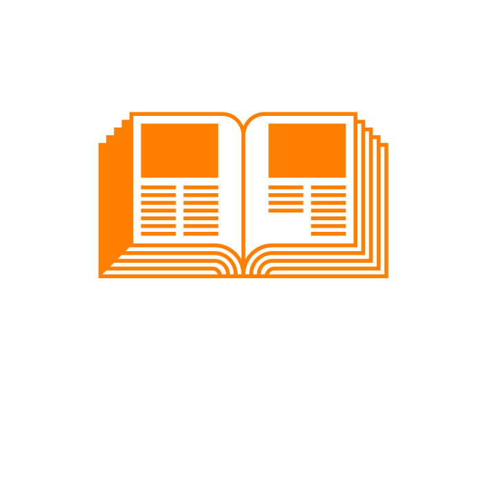

Biennial Magazine
Biennials are typically an art exhibition that takes a snapshot of what the art world and surrounding culture is like during the past two years. Usually the curators choose a theme and run with it, sometimes that theme relates to culture at large but sometimes it’s threads that run through many artists studios. We will use the content and artists from the 2008 Whitney Biennial as a case study to pull together a simple magazine.
Each student will be responsible for typesetting two spreads and a cover option. Each student will typeset part of an introductory essay and the artists list and the best of the designs will be included in the final printed magazine. Then from the artists list you will choose one artist and write a 250 word introduction about their work, images have been provided but you are welcome to search more deeply for images of their works.
We will print this project on a Risograph printer which is like a fancy photocopier that uses colors instead of black to layer and create more artistic images. By using this we will start to understand how color separations work. The class will decide on the colors together, as well as the cover + essay design, any page furniture (page numbers) and it will be up to you to design with the chosen colors, as well as learn how to execute color separations.
Watch
this video as a how to for color separations. Look at
The Whitney's Archive of catalogues as well as ones provided in class.
Each student will design
- 1. 3 Cover Options
- 2. One Spread with INTRO, ARTISTS LIST + ONE PART OF ESSAY
- 3. One spread of Artist with work + your own write up
- 4. Final Files prepped with color separations for Risograph